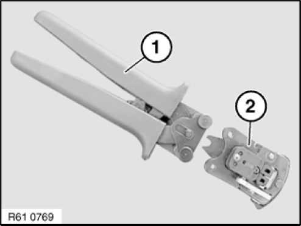
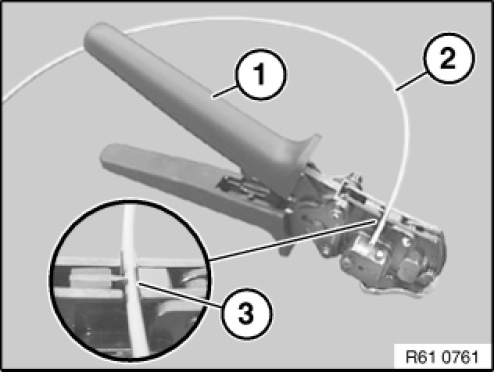
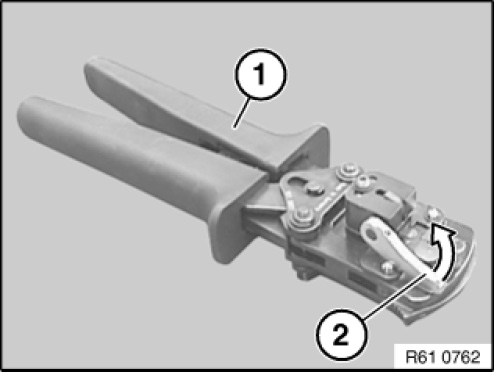
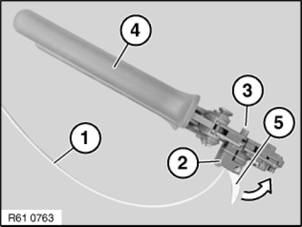
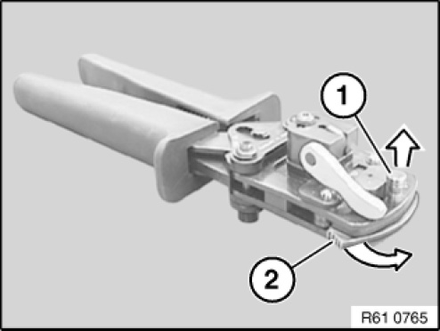
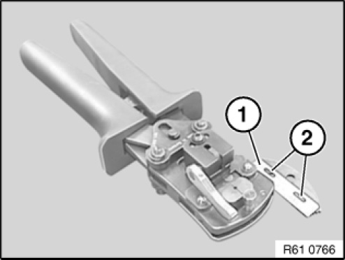
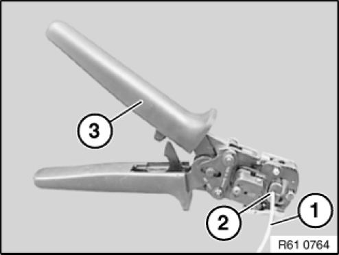

61 13 ... Cutting Off, Stripping Insulation and Cutting Optical Fibres to Length
61 13 ... Cutting Off, Stripping Insulation And Cutting Optical Fibres To Length
Special tools required:

To cut off, strip insulation and cut optical fibres to length, use hand pliers 61 4 321 (1) in conjunction with crimping head 61 4 322 (2) from crimping set 61 4 320 61 4 320 Crimping Tool
NOTE: Hand pliers (1) open automatically until limit position when handles are pressed together.

Cutting optical fibre
Open hand pliers (1).
Place optical fibre (2) in cutting device (3).
Close pliers (1) and remove optical fibre (2).

Stripping insulation from optical fibre
Open hand pliers (1).
Open lever (2) in direction of arrow.

Slide optical fibre (1) into stripping device (2) until flush at point (3).
Close hand pliers (4) fully.
Close clamping lever (5) in direction of arrow.
Open hand pliers (4) by one tooth notch.
Open clamping lever (5) against direction of arrow again and remove optical fibre (1).
NOTE: A stripping replacement blade set is available under number 61 4 327.
Cutting optical fibre to length

IMPORTANT: The cutting blade must be replaced prior to each cutting of the optical fibre.

Pull pin (1) in direction of arrow.
Fold up blade retaining link (2) in direction of arrow.

WARNING: Danger of injury when changing the blade.

Remove blade (1) and replace.
Installation note:
Make sure blade (1) is correctly seated on locating points (2).

Open hand pliers (3).
Slide optical fibre (1) into cutting device (2) until insulation of optical fibre (1) butts against clamping fixture.
Close hand pliers (3) fully and keep closed.
Remove optical fibre (1).